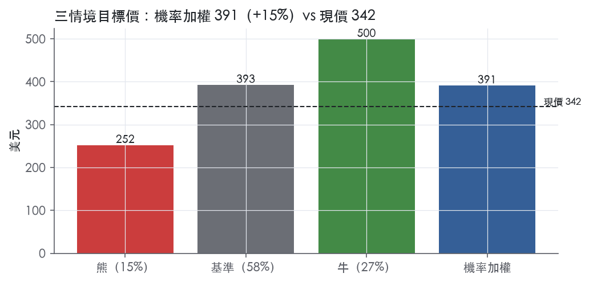
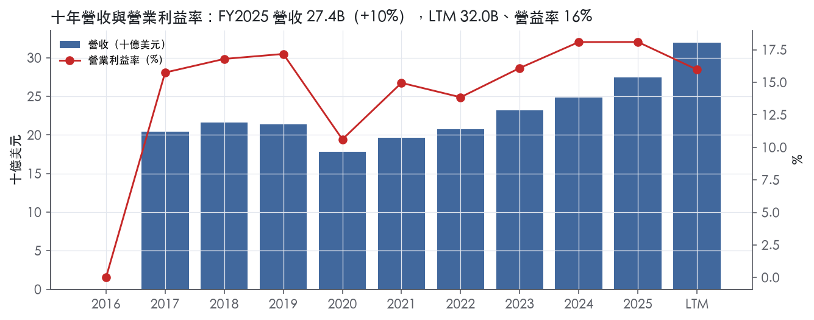
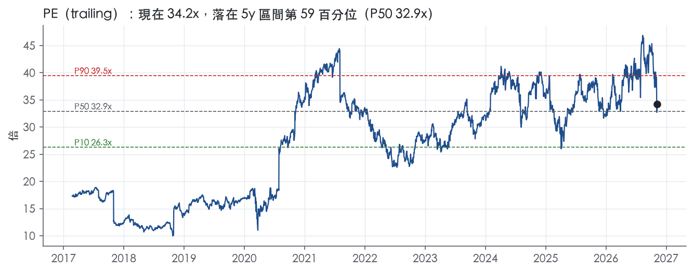
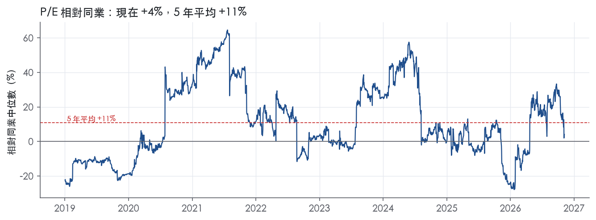
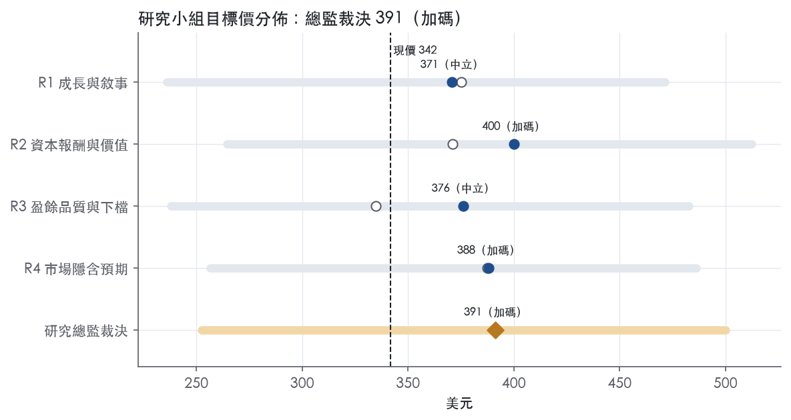
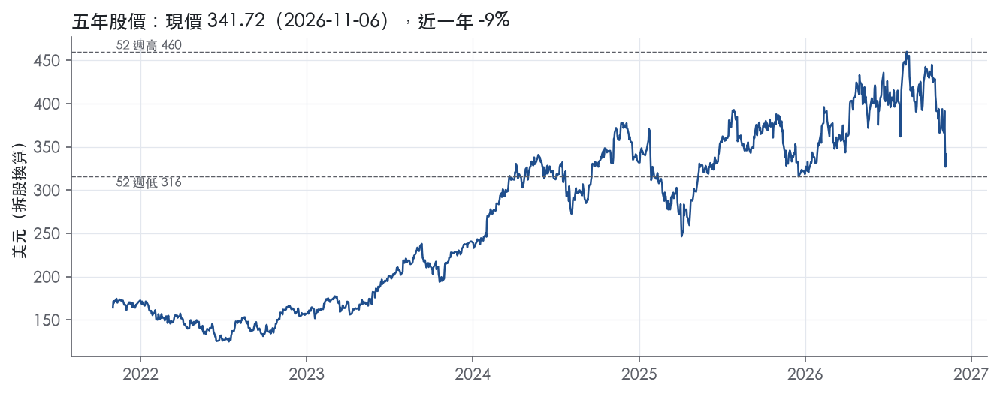

評等總表 › 工業 › ETN
修正盈餘基數後報酬過門檻，看多｜評等 加碼｜目標價 391
| 報告日 | 評等 | 目標價 | 當時股價 | 超額報酬 |
|---|---|---|---|---|
| 2026-11-06 | 加碼 | 391 | 342 | +5.9% |
| 2026-10-30 | 減碼 | 375 | 370 | -7.5% |
| 快評 | 動作 | 結論 |
|---|---|---|
| 2026-11-03 | 維持 | 營收高於預測、獲利持平，維持減碼 |
| 評等 | 加碼（邊界，鄰近中立） |
| 12 個月目標價 | 391 美元 |
| 現價 | 341.72 美元（2026-11-06） |
| 預期報酬 | 股價 +14.5%＋股息 1.3%＝總報酬 +15.8%；同業籃門檻 9.8%，超額 +5.9% |
| 估值方法 | P/E 27.0x，套在第 5–8 季的EPS（也就是一年後的未來四季） |
| 三情境 | 熊 252／基準 393／牛 500 |
| 研究流程 | 四位研究員兩輪辯論＋研究總監裁決 |
| 資料來源 | SEC EDGAR XBRL、Tiingo、FRED（全免費） |
修正盈餘基數後報酬過門檻，看多（研究總監裁決，四位研究員兩輪辯論後）
評等 加碼（邊界，鄰近中立）｜12 個月目標價 391 美元（總監三情境機率加權 401 與研究員中位數 382 各半）｜現價 341.72（2026-11-06）
預期報酬：股價 +14.5%＋股息 1.3%＝總報酬 +15.8%。同業籃門檻 9.8%，超額 +5.9%，離中立的分界不到三個百分點，屬邊界評等（落在其他級距的機率約四成）。
估值方法：P/E 27.0x，套在第 5–8 季的EPS（也就是一年後的未來四季）。三情境：熊 252（15%）／基準 393（58%）／牛 500（27%）。
什麼會讓研究總監改變看法：FY2026Q4 分部營益率低於 25.4% 或 Electrical 滾動 book-to-bill 跌破 1.0，轉中性並向熊情境靠；RMT 現金使淨負債／EBITDA 於 2027 年中降到 2.5x 以下且 FY2027 有機指引 ≥13%，倍數上移到 30x。
| 過去四季（實際，FY2026Q3） | 未來四季 | 第 5–8 季 | 第 9–12 季 | |
|---|---|---|---|---|
| 營收（B） | 32.0B | 36.9B | 40.2B | 42.6B |
| 營收成長 | 20.1% | 15.4% | 9.0% | 6.0% |
| 營業利益率 | 16.0% | 18.5% | 19.0% | 19.0% |
| EPS（美元） | 9.99 | 12.85 | 14.54 | 15.51 |
| EPS 成長 | 0.1% | 28.6% | 13.2% | 6.6% |
| 每股股息（美元） | 4.34 | 4.34 | 4.34 | 4.34 |
| P/E（現價） | 34.2x | 26.6x | 23.5x | 22.0x |
| 股息殖利率（現價） | 1.3% | 1.3% | 1.3% | 1.3% |
過去四季為申報數字；預測為研究總監的假設、程式計算。倍數與殖利率都用現價計算，用來看現價對應各期獲利的高低。
| 項目 | 上次（2026-11-01） | 這次（2026-11-08） | 變動 |
|---|---|---|---|
| 評等 | 減碼 | 加碼 | 變動 |
| 機率加權目標價（美元） | 375 | 391 | +4.4% |
| 超額報酬 | -7.5% | 5.9% | +13.5 pp |
| 目標倍數 | 30x | 27x | — |
| 未來四季營收成長 | 16.0% | 15.4% | -0.6 pp |
| 未來四季營益率 | 17.0% | 18.5% | +1.5 pp |
| 未來四季 EPS（美元） | 11.41 | 12.85 | +12.6% |
| 熊／基準／牛機率 | 22／51／27 | 15／58／27 | — |
程式計算；「未來四季」各自從當次報告的資料起點算。研究總監逐點說明見第八章「與上次報告比較」。
| 情境 | 機率（歷史） | 故事 | 未來四季營收成長 | 第 5–8 季營益率 | 倍數 | 目標價 | 股價漲跌 |
|---|---|---|---|---|---|---|---|
| 熊 | 15%（13%） | 風險表第 2 條：Boyd、COL 整合與擴產讓 GAAP 利潤率停在 FY2026Q2 低點、Q4 分部營益率指引 25.4% 落空，營收靠積壓撐住，倍數壓到前瞻帶 P25–P50；背景為本行下行路徑 | 11.0% | 16.5% | 22.0x | 252 | -26.1% |
| 基準 | 58%（59%） | 併購滿週年後成長降檔至 9%、一次性費用退場而攤銷永久、Mobility 留表當 RMT 價值代理，扣利息前營益率 19%，前瞻 P/E 與今天持平 | 15.4% | 19.0% | 27.0x | 393 | 14.9% |
| 牛 | 27%（28%） | 有機成長停在雙位數上段、分部營益率超過指引上緣、RMT 現金降槓桿，市場付到前瞻帶 P75–P90；總經走本行上行路徑 GDP 2.8 | 20.0% | 20.0% | 30.0x | 500 | 46.3% |
目標價由程式依研究總監的驅動與倍數計算；機率由研究總監給定。括號內是歷史頻率：把這檔股票過去十年 12 個月報酬的波動形狀，置中在基準情境，結果落在各情境附近的比例。

四位研究員用不同方法各自估值，回應研究總監的質疑後交出第二輪，最後由總監逐點裁決。各研究員的主張見第七章，裁決理由見第八章，完整論證見《研究底稿》。
| 立場（一輪→二輪） | 加權目標價（一輪→二輪） | 評等（一輪→二輪） | 第二輪倍數 | 熊～牛目標價 | |
|---|---|---|---|---|---|
| R1 成長與敘事 | 看多→中性 | 375→371 | 中立→中立 | 28.0x | 236～471 |
| R2 資本報酬與價值 | 中性→中性 | 371→400 | 中立→加碼 | 26.0x | 264～512 |
| R3 盈餘品質與下檔 | 中性→中性 | 335→376 | 減碼→中立 | 27.0x | 238～483 |
| R4 市場隱含預期 | 看多→看多 | 387→388 | 中立→加碼 | 28.0x | 257～486 |
| 研究總監裁決 | 看多 | 391 | 加碼 | 27.0x | 252～500 |
目標價由程式依各自的驅動與倍數計算；評等＝機率加權總報酬 − 同業籃門檻。
Eaton 是一家智能電力管理公司，為資料中心、電力公司、工業、商業、機器製造、住宅、航太與汽車市場提供產品¹。公司成立於 1911 年，2025 年營收 27.4B 美元，服務 180 個國家的客戶¹。Eaton 正受益於電氣化、數位化、北美再工業化與大型專案，以及全球基礎設施支出增加等趨勢，這些趨勢正在擴大其終端市場¹。本質上這是一家靠電力價值鏈滲透＋併購驅動成長的工業電氣公司，而非單純的傳統電氣設備廠。
Eaton 目前揭露 Electrical Americas、Electrical Global、Aerospace、Vehicle、eMobility 五個分部，2026 年第一季起重組為 Electrical Americas、Electrical Global、Aerospace、Mobility（Vehicle＋eMobility 合併）四個分部，新分部財務資訊將於 2026 年 Q1 10-Q 揭露¹。Electrical 分部協助客戶以可靠、高效、安全且可持續的方式管理電力，從電網到住宅、建築、資料中心與工業場域，是 Eaton 在基礎設施現代化與電氣化中的核心角色¹。2025 年 Electrical Americas 與 Electrical Global 這兩個分部 22% 的銷售來自六家大型電氣產品與系統服務客戶¹；按最新一季（FY2026Q3）規模看，Electrical Americas 單季銷售 4.2B 美元為最大分部，Electrical Global 單季銷售 2.7B 美元次之，兩者合計已逼近集團營收的八成²。Aerospace 提供提升飛機效率、安全與性能的技術，涵蓋商用、軍用與太空市場，2025 年 20% 銷售來自三家大型飛機原始設備製造商¹，FY2026Q3 單季銷售 1.2B 美元²。Vehicle 分部提供改善安全、效率與性能的差異化技術，致力於推動電動車轉型同時持續提供內燃機解決方案，2025 年 37% 銷售來自四家大型整車原始設備製造商¹；eMobility 分部 2025 年 18% 銷售集中於單一整車客戶¹。重組後的 Mobility 分部 FY2026Q3 單季銷售 852M 美元，是四個分部中規模最小者²。公司已於 2026 年 1 月宣布計畫將 Mobility 業務分拆為獨立上市公司¹，這代表 Eaton 正把資源集中到成長更快、毛利更高的 Electrical 與 Aerospace 兩大引擎。
Eaton 服務 180 個國家的客戶，终端市場橫跨資料中心、電力公司、工業、商業、住宅、航太與汽車¹。Electrical 分部在正常經濟週期下，第一季銷售歷史上較低，第三、四季較高，顯示其業務具季節性¹。各分部的客戶集中度不低：Electrical Americas／Global 的六大客戶占 22%，Aerospace 三大 OEM 占 20%，Vehicle 四大 OEM 占 37%，eMobility 單一客戶占 18%，顯示 Vehicle／eMobility 的客戶集中度風險明顯高於 Electrical 與 Aerospace¹。10-K 未按地理區域拆分營收占比。最新一季 Electrical Global 銷售年增 58%，其中 31% 來自 Boyd Thermal 併購貢獻，反映歐洲與資料中心液冷市場的通路擴張是當期成長的重要來源²。
FY2025Q4（截至 2025-12-31）營收 7.05B 美元，年增 13.1%，毛利率 36.8%，營益率 18.7%（相關資料包）。FY2026Q1 營收 7.45B 美元，年增 16.8%，但毛利率降至 35.6%、營益率降至 16.3%，顯示併購稀釋了短期利潤率（資料包 FY2026Q1）。FY2026Q2，公司公布創紀錄第二季業績：營收 8.5B 美元，較去年同期增長 21%，其中有機銷售成長 14%，優於指引上緣³；分部營益率 23.1%，較去年同期下滑 80 個基點³；營運現金流 1.1B 美元，自由現金流 874M 美元，分別較去年同期成長 23% 與 22%³；同季公司宣布透過 Reverse Morris Trust 交易分拆 Mobility 業務，預計 2027 年第一季完成³。對第三季指引為有機成長 13.5–15.5%、分部營益率 24.6–25.0%、每股盈餘 2.77–2.87 美元、調整後每股盈餘 3.46–3.56 美元³。FY2026Q3，公司公布創紀錄第三季業績：營收 8.9B 美元，較去年同期增長 28%，其中有機銷售成長 19%，優於指引上緣²；分部營益率達創紀錄的 25.3%，優於指引上緣，Electrical Americas 營益率季增 230 個基點²；營運現金流 1.31B 美元，自由現金流 1.03B 美元²；每股盈餘 2.77 美元，調整後每股盈餘創紀錄 3.68 美元²。公司並上調有機成長指引，全年每股盈餘預期 10.39–10.49 美元，調整後每股盈餘預期 13.70–13.80 美元；第四季指引為有機成長 13–15%、分部營益率 25.4–25.8%、每股盈餘 3.28–3.38 美元²。四季趨勢清楚：營收加速成長（13%→17%→21%→28%），但毛利率因併購與攤銷費用承壓，分部營益率則在 Q3 顯著回升至歷史高點。
公司表示正在把握電氣化、數位化、北美再工業化與大型專案，以及全球基礎設施支出增加等宏觀趨勢，這些趨勢正在擴大其終端市場，並為未來數年的成長打下基礎¹。公司強調正在強化其在整個電力價值鏈的參與，並受益於資料中心與電力公司終端市場的動能，以及商用航太與國防市場的成長週期¹。CEO Paulo Ruiz 表示，第三季強勁表現反映團隊全年展現的專注與紀律，在擴充產能、強化執行的同時，使業務得以滿足加速增長的客戶需求，有機成長與分部營益率雙雙優於指引上緣，主要受惠於各市場強勁需求及 Electrical 業務持續的動能²。公司並透過一系列併購（Fibrebond、Resilient、Ultra PCS、宣布收購 Boyd Thermal 與 COL Group）強化資料中心模組化方案、固態變壓器技術、液冷技術與歐洲中壓配電能力，同時透過分拆 Mobility 業務聚焦於電氣與航太兩大高成長、高毛利業務¹²。從訂單與 backlog 數據看，Electrical Americas、Electrical Global 與 Aerospace 三個分部的十二個月滾動平均訂單分別年增 39%、51%、20%，backlog 年增 46%（Electrical）與 33%（Aerospace），顯示資料中心與電網升級需求的能見度已延伸至未來多個季度，而非一次性併購貢獻。不過毛利率與營益率在 Q1–Q2 的下滑說明併購整合與攤銷費用短期內會侵蝕獲利品質，投資人需留意 Q3 的營益率回升是否可持續，而非僅是單季表現。Mobility 分拆完成後，集團營收結構將更集中於電氣與航太兩大引擎，估值與成長敘事可能隨之重估。

Eaton 評為窄護城河，趨勢穩定。優勢主要來自電氣與航太的轉換成本，以及百年品牌加上整套智慧財產權組合；兩者足以讓 ROIC 在中期維持在資本成本之上。給不到寬，原因是數字太薄：ROIC 十年平均 11.9% 只比資本成本代理值 9.8% 高出 2.1%，而且 9 年中只有 6 年高於資本成本。趨勢判穩定，是兩股力量互相抵銷的結果。往上的力量是 ROIC 從 FY2023 的 12.4% 升到 FY2025 的 15.2%（資料包年表 ROIC）。往下的力量是 2026 年密集併購，總債務從 FY2025Q4 的 9.89B 美元升到 FY2026Q1 的 21.13B 美元（資料包季表 總債務），短期會稀釋資本報酬。
轉換成本是最主要的來源，其中航太最明確。航太分部的主要競爭方式是總擁有成本、產品與系統性能、品質、設計工程能力及準時交付¹。公司在該分部的許多產品與機型平台上被視為市場領導者¹。零組件一旦經過設計進入機型平台，客戶要更換供應商就得重新設計和驗證，這是典型的平台綁定。電氣分部的競爭方式包括產品與系統性能、技術、客戶服務與支援，以及價格¹。服務與系統整合會讓既有裝機量形成黏性。收購 Boyd Thermal 後，公司可從晶片到電網服務超大規模與託管資料中心客戶¹。把配電、模組化機房、液冷綁成整套方案，會墊高資料中心客戶的更換成本。
無形資產是第二個來源，但護城河在「組合」，不在單一專利。Eaton 成立於 1911 年，在電氣分部的許多產品中被視為市場領導者¹。公司以專利、商標、授權等智慧財產權組合來製造與銷售產品，其中部分權利將來會到期¹。管理層認為，任何單一智慧財產權的喪失或到期本身不會造成重大影響¹。這表示專利不是關鍵壁壘，品牌信任和產品線廣度才是。
利潤率的穩定性支持護城河主張，ROIC 的利差只算勉強支持。毛利率十年標準差 2.5%，營業利益率標準差 2.2%。在營收衰退 16.5% 的 FY2020，營業利益率最低仍有 10.6%，這是有定價權的工業公司會有的形狀。毛利率從 FY2017 的 32.6% 升到 FY2025 的 37.6%（資料包年表 毛利率），可佐證電氣產品有一定的轉嫁能力。
衝突在 ROIC：十年最低 6.7%，平均僅高於資本成本 2.1%。低於資本成本的年份集中在 FY2020 至 FY2022，ROIC 依序為 6.7%、9.4%、9.8%（資料包年表 ROIC）。這段期間是疫情衰退與復甦，不是結構性失守，所以不下修到無。資本成本代理值是以目前的 10 年債殖利率 4.84%計算，用來衡量過去低利率年份會高估門檻，歷史利差因此被低估。反過來說，在現行利率下利差本來就薄，2026 年的季度數字也在惡化：FY2026Q2 毛利率 33.5%、營益率 14.0%（資料包季表 FY2026Q2），已低於十年平均的 34.1% 與 15.7%。正因如此，評級只到窄，不到寬。
第一個威脅是價格競爭。電氣分部與 Vehicle 分部的主要競爭方式都包含價格¹。這代表轉換成本並不足以完全隔絕比價。
第二個威脅是買方集中。2025 年電氣兩個分部有 22% 的銷售來自六家大型客戶¹。資料中心訂單集中在少數超大規模業者手上，需求轉弱時，議價權會回到買方。
第三個威脅是併購墊高投入資本。公司在 2025 年收購 Fibrebond 與 Resilient，並宣布收購 Boyd Thermal¹。如果這些標的的回報低於集團水準，ROIC 會被拉回十年平均附近，利差隨之收窄。
第四個威脅是技術換代。公司收購 Resilient 是為了加速固態變壓器技術的商業化¹。這說明下一代配電技術不是 Eaton 原生擁有的，技術換代可能重置既有廠商的優勢。
最後是週期性。FY2020 營收衰退 16.5%、ROIC 降到 6.7%。資料中心資本支出一旦反轉，類似的回落可能重演。
窄護城河加上僅 2.1% 的 ROIC 利差，不足以支撐以護城河為理由的倍數溢價，目標倍數相對同業應持平。目前 P/E 34.2x 已高於自身五年中位數 32.9x。任何溢價都應歸因於資料中心與電網需求帶來的成長能見度，而不是護城河，並且只能在窄護城河的期間內給，之後要逐步回歸同業倍數。
| 指標 | 最新 | 十年平均 | 標準差 | 最低 | 最高 |
|---|---|---|---|---|---|
| ROIC | 15.2% | 11.9% | 2.6% | 6.7% | 15.2% |
| 毛利率 | 37.6% | 34.1% | 2.5% | 30.5% | 38.2% |
| 營業利益率 | 18.1% | 15.7% | 2.2% | 10.6% | 18.1% |
| FCF 利潤率 | 12.9% | 11.6% | 2.2% | 8.1% | 14.3% |
| ROE | 21.6% | 15.8% | 3.8% | 9.1% | 21.6% |
程式計算。資本成本代理值（10 年債＋5%）：9.8%；ROIC 平均減資本成本：2.1%；ROIC 有資料的 9 年中，高於資本成本 6 年。
Eaton LTM 營業現金流／淨利 1.26x、FCF／淨利 0.97x，且應計比率為負 1.8%，顯示盈餘有紮實現金支撐。但淨負債／EBITDA 從三年均值 1.42x 跳升到 LTM 2.97x，股數變動與股東回饋比率也同步轉黃，三項訊號同時出現且時間點都對齊 2026 年初的連續併購，屬於可解釋、非帳務品質惡化的紅旗。因此整體評等落在「中」，估值不需對 GAAP 盈餘本身打大折扣，但槓桿上升應限制倍數擴張空間。
現金轉換在十年與近三年期間都穩定在 1 倍以上，LTM 營業現金流／淨利 1.26x、三年均值 1.12x、十年均值 1.25x，皆落在綠燈區。FCF／淨利 LTM 0.97x、三年均值 0.90x、十年均值 1.01x，同樣維持綠燈，顯示資本支出並未侵蝕現金盈餘。應計比率（淨利減 CFO／平均總資產）LTM 為 -1.8%、三年 -1.2%、十年 -1.4%，持續為負值，代表盈餘沒有依賴應計項目膨脹，是偏保守的會計特徵。
唯一需要注意的是單季波動：FY2026Q1 營業現金流僅 0.51B，低於同季淨利 0.87B，CFO／淨利當季跌破 1 倍（資料包·最近八季）。這與同一季總債務從 FY2025Q4 的 9.89B 跳到 21.13B 的時點重疊，顯示是併購交割帶來的營運資金與整合性現金流出，而非核心業務現金轉換惡化，之後 Q2、Q3 CFO 已回升到 1.13B、1.31B（資料包·最近八季）。存貨成長減營收成長（FY2025）為 +1.4pp，遠低於 15pp 紅線，營運資金沒有在吃掉盈餘。
Eaton 第三季 GAAP 稀釋 EPS 為 $2.77，調整後 EPS 為 $3.68，差距主要來自三項排除：無形資產攤銷費用稅後每股 $0.62、併購與處分相關費用稅後每股 $0.30、以及多年期重組方案收益每股 $0.01（8-K 2026-11-03）²。前九個月口徑更明顯：GAAP EPS $7.10 對比調整後 $9.64，其中無形資產攤銷貢獻 $1.41、併購及處分費用貢獻 $1.01、重組費用貢獻 $0.12（8-K 2026-11-03）²。
這三項裡，無形資產攤銷雖是非現金項目，但反映的是公司用現金與舉債買下 Fibrebond、Resilient、Ultra PCS 等公司所取得的可辨識無形資產正在真實消耗經濟價值，不宜完全視為一次性，應視為併購戰略的持續性成本。併購與處分費用則是真正的一次性整合成本，隨交易完成會遞減。重組費用（收益）金額小且本季為負，對盈餘影響可忽略。整體而言，調整後 EPS 高估了常態盈餘能力，估值應以 GAAP 數字為主要參照，調整後數字只能作為營運動能的輔助指標。
利息費用淨額第三季從去年同期 $67M 暴增到 $198M，九個月累計從 $171M 增加到 $505M，直接反映新增舉債的利息負擔（8-K 2026-11-03）²。公司在 2025 年完成 Fibrebond、Resilient 兩筆收購，並宣布收購 Boyd Thermal、COL Group，2026 年 1 月再完成 Ultra PCS 交割（10-K Item 1）¹。這波併購直接把淨負債推升到 19.29B、EV 推升到 152.05B（資料包快照），也讓淨負債／EBITDA 從三年均值 1.42x 跳到 LTM 2.97x。
利息保障倍數 LTM 仍有 8.89x，守在綠燈門檻，但已從三年均值 26.7x、十年均值 21.9x 大幅滑落，顯示利息負擔對營業利益的侵蝕速度很快。股利加回購占淨利比例 LTM 48.3%，低於 50% 綠燈門檻，三年均值 77.8%、十年均值 92.8%，說明公司近期把資本配置重心從股東回饋轉向併購。公司在 2025 Q4 以 $193M 買回 51.2 萬股，2025 Program 額度為 $9.0B，截至 2025 年底仍有 $7.6B 未用（10-K Item 5）⁴，顯示回購意願未消失，只是被併購資本需求排擠。另一結構性變數是 2026 年 1 月宣布的 Mobility 事業分割計畫（Vehicle 與 eMobility 兩個分部），預計 2027 年第一季底前完成，屆時合併報表範圍會縮小（10-K Item 1A）⁵，這會影響未來盈餘可比性，但不屬於當期盈餘品質問題。
淨負債／EBITDA 黃燈（LTM 2.97x vs 三年 1.42x、十年 1.78x）：真實槓桿上升，但成因明確——2025–2026 年連續併購（Fibrebond、Resilient、Ultra PCS，加上已宣布的 Boyd Thermal、COL Group）直接墊高債務（10-K Item 1）¹，季度總債務也從 10.65B 跳升到 21.13B（資料包·最近八季），屬於可解釋的策略性槓桿，不是盈餘灌水或隱藏虧損。
稀釋股數年變動黃燈（LTM 0.0%、三年 -0.8%、十年 -1.7%）：LTM 股數持平、未見稀釋加速，三年與十年均為淨減少（回購效果），這條黃燈是因為 LTM 恰好卡在綠燈門檻邊緣，而非稀釋惡化的訊號，屬於統計邊界效應。
（股利＋回購）／淨利黃燈（LTM 48.3% vs 十年均值 92.8%）：下滑是因為公司把現金流向併購而非股東回饋，公司仍有 $7.6B 回購額度未用完（10-K Item 5）⁴，顯示並非現金枯竭，而是資本配置優先順序暫時轉向，屬可解釋紅旗。
SBC／營收無評等（十年均值 0.0%，LTM 與三年均缺值）：資料包未提供足夠 SBC 數據做燈號判斷，無法在本章下結論，建議估值研究員留意此缺口，不應假設 SBC 影響可忽略。
估值應以 GAAP EPS（LTM 9.99、資料包快照）為主要基準，調整後 EPS 排除的無形資產攤銷屬併購帶來的持續性成本，不應完全加回，只能用非 GAAP 數字評估營運動能而非真實盈餘能力。盈餘品質本身無需打折——現金轉換持續健康、應計比率為負，GAAP 盈餘是可信的。但淨負債／EBITDA 已逼近 3x、利息費用年增近三倍，這個槓桿水位應限制 EV/EBITDA 與 P/E 往歷史高分位（現在 P/E 58.9 分位、EV/EBITDA 48.4 分位，資料包）以上擴張，直到後續併購整合完成、槓桿回落驗證為止。
| 項目 | LTM | 近三年 | 十年 | 燈號 | 規則 |
|---|---|---|---|---|---|
| 營業現金流／淨利 | 1.26x | 1.12x | 1.25x | 綠 | ≥1.00x 綠、<0.80x 紅 |
| 自由現金流／淨利 | 0.97x | 0.90x | 1.01x | 綠 | ≥0.90x 綠、<0.60x 紅 |
| 應計比率（(淨利−CFO)／平均總資產） | -1.8% | -1.2% | -1.4% | 綠 | ≤0.0% 綠、>5.0% 紅 |
| SBC／營收 | — | — | 0.0% | — | ≤3.0% 綠、>8.0% 紅 |
| 淨負債／EBITDA | 2.97x | 1.42x | 1.78x | 黃 | ≤1.50x 綠、>3.00x 紅 |
| 利息保障倍數（營業利益／利息） | 8.89x | 26.7x | 21.9x | 綠 | ≥8.00x 綠、<3.00x 紅 |
| 稀釋股數年變動 | 0.0% | -0.8% | -1.7% | 黃 | ≤0.0% 綠、>3.0% 紅 |
| （股利＋回購）／淨利 | 48.3% | 77.8% | 92.8% | 黃 | ≥50.0% 綠、<0.0% 紅 |
| 存貨成長 − 營收成長（FY2025） | +1.4pp | — | — | 綠 | ≤5pp 綠、>15pp 紅 |
程式計算；燈號以 LTM（無則近三年平均）判定。
| 風險 | 觸發指標（看什麼數字、在哪裡看） | 對 EPS 的影響方向與粗略幅度 | 未來 12 個月發生機率 | 出處 |
|---|---|---|---|---|
| Mobility 分拆延遲／未完成或條件不利 | 公告時程（原定 2027Q1 前完成）、8-K／10-Q 進度更新、Reverse Morris Trust 稅務裁定公告 | 負向，中；若延遲或失敗可能引發市場對管理層執行力重新評估，衝擊估值倍數而非當期 EPS | 中 | ⁵³ |
| 併購整合稀釋利潤率（Boyd Thermal、Ultra PCS、COL Group 等） | 季度毛利率／分部營益率（FY2026Q1 毛利率 35.6%、營益率 16.3% vs FY2025Q4 36.8%／18.7%）、無形資產攤銷費用揭露（Q3 攤銷影響 EPS 0.62 美元） | 負向，中；Q1-Q2 已顯示營益率下滑，攤銷費用是結構性成本² | 高 | ²量化底稿 |
| 客戶集中度：Vehicle 四大 OEM 占 37%、eMobility 單一客戶占 18% | 分部季度銷售年增率、主要客戶是否公開減單或轉單消息 | 負向，中；單一大客戶流失對 Mobility 分拆後獨立公司衝擊更直接 | 中 | |
| 關稅與貿易政策變動侵蝕毛利 | 美國關稅稅率公告、公司提價公告、季度毛利率是否因成本轉嫁失敗而下滑 | 負向，大小不定（10-K 未給量化數字，僅方向）⁵ | 中 | 10-K 年報 FY2025 Item 1A（風險因素） |
| 供應鏈／單一供應商中斷 | 供應商交付延遲公告、原材料（鋼、銅、鋁等）價格指數、生產中斷新聞 | 負向，方向不明幅度不定，10-K 未給數字 | 低 | 10-K 年報 FY2025 Item 1A（風險因素） |
Mobility 分拆風險排名第一，因為它同時牽動估值重估與執行不確定性。公司已宣布計畫以 Reverse Morris Trust 交易分拆 Mobility（Vehicle＋eMobility）業務，目標 2027 年第一季前完成³。10-K 明確列出分拆可能「延遲一段重大時間或完全無法完成」，且即使完成也可能無法實現預期效益，交易相關的對沖、重組費用與分拆後 Mobility 業務面臨的限制條件都是風險⁵。公司意圖使分拆對美國股東免稅，但「無法保證分拆能滿足免稅條件」⁵。監測重點是後續 8-K／10-Q 中分拆進度與稅務裁定公告，一旦時程延後或條件轉差，市場通常會重新評估 Electrical＋Aerospace 純業務的估值溢價是否兌現。
併購驅動的利潤率波動是第二大風險，因為它已經在最近四季財報中實際發生。FY2026Q1 毛利率從 FY2025Q4 的 36.8% 降至 35.6%，營益率從 18.7% 降至 16.3%（資料包量化底稿），公司在業務概況章中也指出「併購整合與攤銷費用短期內會侵蝕獲利品質」。10-K 直接點名「併購可能對盈餘造成稀釋，並對現金流產生不利影響」，且整合挑戰包括未預見的負債與無法如預期實現的成本協同效益⁵。Q3 財報揭露無形資產攤銷費用對每股盈餘的拖累達 0.62 美元，併購與分拆相關費用再拖累 0.30 美元²，顯示這不是一次性項目，而是隨併購節奏持續存在的結構性成本。
客戶集中度風險主要集中在 Vehicle 與 eMobility，而非集團整體。2025 年 Vehicle 分部 37% 銷售來自四家大型整車 OEM，eMobility 分部 18% 銷售集中於單一 OEM 客戶，這兩個分部即將被分拆為獨立的 Mobility 公司，意味著分拆後的新公司將直接承受比母公司更高的客戶集中度風險。Electrical 分部的集中度相對溫和（六大客戶占 22%），Aerospace 三大 OEM 占 20%，風險權重較低。
關稅與貿易政策風險是方向明確但幅度不可量化的風險。10-K 指出「貿易政策變化，包括關稅與關稅的徵收，可能大幅提高進口至美國的商品成本，甚至波及非進口商品的更廣泛成本壓力」，若公司無法藉提價轉嫁成本，將直接壓縮產品毛利率與財務表現⁵。公司未提供具體受影響金額或占比，因此僅能標示方向與機率，監測點為美國關稅政策公告與季度毛利率變化。
供應鏈與單一供應商中斷風險排名最後，因 10-K 用語偏一般性、缺乏近期實際案例佐證。公司承認「維持單一供應商關係」，若該供應商交付延遲或中斷，「對高銷售量且更高利潤產品的影響會更嚴重」⁵，但原文未提供具體供應商或產品線，且公司表示「正常情況下取得原材料並無困難」⁵，顯示目前並非急迫風險。
Electrical Global 的高成長是否可持續仍待驗證，因為當季近三分之一成長來自單一併購標的的貢獻，而非內生需求。FY2026Q3 Electrical Global 銷售年增 58%，其中有機成長 27%、Boyd Thermal 貢獻 31%²，意味著扣除 Boyd Thermal 後的成長率明顯較低；一旦該併購進入年度比較基期（約 2026 年底），年增率將自然回落，市場若未區分有機與併購貢獻，可能錯誤外推成長斜率。
分拆完成後剩餘集團（Electrical＋Aerospace）的估值敘事會重新定錨，但目前尚無獨立財務數字可供驗證。目前 P/E trailing 34.2x 已處於 5 年區間的 58.9 百分位，市場可能已部分反映「電氣＋航太純業務」的溢價預期；若分拆後 Mobility 獨立公司的訂單、毛利率表現不如預期，或分拆後合併財報揭露的歷史分部數字與目前推算有落差，倍數重新定錨的方向與幅度存在不確定性，需待 2027Q1 10-Q 分拆後首次財報才能驗證。
現價 341.72 對應 trailing（過去四季）P/E 34.2x、EV/EBITDA 23.4x、EV/EBITA —、EV/Sales 4.8x、FCF 殖利率 2.9%。主要估值倍數 P/E 現在 34.2x，落在5 年區間第 59 百分位（P10／P50／P90 = 26.3x／32.9x／39.5x）。

把程式的機械基準預測放到現價下，市場付的前瞻倍數是：P/E（未來四季） 30.1x、P/E（第 5–8 季） 26.8x。反推 DCF 顯示市價隱含未來五年營收年成長 14.9%（WACC 9.0%、終值成長 3.0%、FCF 利潤率 14.2%，SBC 不加回）。
| 倍數 | 現在 | 5 年 P10 | 5 年 P50 | 5 年 P90 | 現在分位 | 全期 P50 |
|---|---|---|---|---|---|---|
| P/E | 34.2x | 26.3x | 32.9x | 39.5x | 58.9% | 28.8x |
| EV/EBITDA | 23.4x | 17.2x | 23.7x | 28.9x | 48.4% | 19.7x |
| EV/EBITA | 26.4x | — | — | — | — | 25.4x |
| EV/EBIT | 29.8x | 22.6x | 29.3x | 35.3x | 54.8% | 26.4x |
| EV/Sales | 4.8x | 3.4x | 5.1x | 6.1x | 46.2% | 3.8x |
| P/S | 4.2x | 3.0x | 4.7x | 5.7x | 41.7% | 3.4x |
| P/FCF | 35.1x | 32.8x | 39.8x | 45.5x | 19.4% | 31.0x |
trailing 倍數（股價 ÷ 過去四季）；分位以每個交易日計算。
同業籃：EMR, ROK, HUBB, PH, VRT, GEV（手動名單（playbooks/peers.yaml））。評等門檻 9.8%：同業「倍數不變下持有一年」的隱含報酬中位數（＝ FCF 殖利率 ×(1＋g)＋g，g 為 5 年營收年複合成長並夾在 −2%～8%），每家夾在 0～15%、P/E 低於 5 倍視為資料可疑而排除，中位數再限制在 10 年債到 10 年債＋5% 之間（同業原始中位數 12.0%）。
| 代號 | 市值 | 5 年營收 CAGR | 營益率 | ROIC | P/E | 5 年 P/E 中位數 | EV/EBITDA | P/FCF | 隱含報酬 |
|---|---|---|---|---|---|---|---|---|---|
| ETN | 132.8B | 9.0% | 16.0% | 15.2% | 34.2x | 32.9x | 23.4x | 35.0x | 11.1% |
| EMR | 90.6B | 1.4% | 17.0% | 7.6% | 35.5x | 21.5x | 21.8x | 26.2x | 5.3% |
| ROK | 41.7B | 5.7% | 22.7% | 21.3% | 35.3x | 33.0x | 18.9x | 27.8x | 9.5% |
| HUBB | 22.8B | 9.7% | 20.2% | 18.0% | 25.2x | 27.5x | 17.3x | 24.6x | 12.4% |
| PH | 115.7B | 8.4% | 23.6% | 17.7% | 31.5x | 27.8x | 21.1x | 30.0x | 11.6% |
| VRT | 70.4B | 18.5% | 20.1% | 30.2% | 34.2x | 72.8x | 22.8x | 22.4x | 12.8% |
| GEV | 204.9B | 8.7% | 6.4% | — | 20.4x | — | 44.9x | 12.0x | 17.0% |
| 同業中位數 | 8.6% | 20.2% | 18.0% | 32.9x | 27.8x | 21.4x | 25.4x | 9.8% |
全部 trailing，程式以各公司 SEC XBRL 與 Tiingo 行情計算；第一列為本檔。
P/E 相對同業中位數：現在 4.1%，過去 1 年平均 4.6%、3 年 12.1%、5 年 10.9%；EV/EBITDA 相對同業中位數：現在 8.4%，過去 1 年平均 19.0%、3 年 29.4%、5 年 19.7%。

事後實現前瞻倍數帶（P/E，2018-11-19..2025-11-17）：P10／P50／P90 = 18.6x／24.0x／33.4x。它是每個交易日的股價除以之後四季實際實現的指標；一年後，今天的第 5–8 季正是那時的未來四季，所以這條帶是 12 個月目標價的同口徑倍數。因為用的是事後實際而非當時預期，過去成長超乎預期的公司這條帶會偏低。
程式的機械基準（成長率從過去四季年增率三年收斂到 6%、利潤率持平）用 事後實現前瞻 P/E P50 估值得到 306（-10.4%），市場現行前瞻倍數（現價 ÷ 基準 未來四季指標）一年後持平，套在基準 第 5–8 季指標得到 383。這兩個數字只是參考點，不是本報告的目標價；研究員對這個定價的回應在第七章。
下表是每位研究員第一輪（各自獨立）與第二輪（回應研究總監的質疑後）的結果。目標價全由程式依各自的假設計算。
| 立場（一輪→二輪） | 加權目標價（一輪→二輪） | 評等（一輪→二輪） | 第二輪倍數 | 熊～牛目標價 | |
|---|---|---|---|---|---|
| R1 成長與敘事 | 看多→中性 | 375→371 | 中立→中立 | 28.0x | 236～471 |
| R2 資本報酬與價值 | 中性→中性 | 371→400 | 中立→加碼 | 26.0x | 264～512 |
| R3 盈餘品質與下檔 | 中性→中性 | 335→376 | 減碼→中立 | 27.0x | 238～483 |
| R4 市場隱含預期 | 看多→看多 | 387→388 | 中立→加碼 | 28.0x | 257～486 |
| 研究總監裁決 | 看多 | 391 | 加碼 | 27.0x | 252～500 |
目標價由程式依各自的驅動與倍數計算；評等＝機率加權總報酬 − 同業籃門檻。
分歧度：第一輪 加權目標價 335～387（區間＝現價的 15%）· 倍數 26～33x · 立場 看多×2、中性×2；第二輪 加權目標價 371～400（區間＝現價的 9%）· 倍數 26～28x · 立場 中性×3、看多×1。

| 研究員 | 第二輪主張 | 堅持的理由 |
|---|---|---|
| R1 成長與敘事 | 中性，28x：訂單撐得起雙位數成長，但報酬已大致反映在股價。 | 熊情境機率維持 22%：高槓桿與分拆是過去十年沒有的風險。 |
| R2 資本報酬與價值 | 中性，26x：營益率口徑修正提高盈餘，但倍數錨不動。 | ROIC 15.2% 低於同業 18.0%，槓桿 2.97x，不給更高倍數。 |
| R3 盈餘品質與下檔 | 中性，27x：修正 Mobility 歸零與利息口徑兩個錯誤後維持中性。 | 只看 GAAP EPS：前九個月攤銷每股 1.41，是持續成本。 |
| R4 市場隱含預期 | 溫和看多，28x：利潤率上修還沒被市場定價。 | 相對同業 P/E 溢價壓到 4.1%，分部營益率卻創 25.3% 新高。 |
每位研究員的逐條回應與完整論證見《研究底稿》（ETN_研究底稿_2026-11-08.docx）。
| 分歧點 | R1 成長 | R2 價值 | R3 品質 | R4 預期 | 什麼資料會分出勝負 |
|---|---|---|---|---|---|
| 營益率口徑與 Q5–Q8 水準（op_margin_y2） | 扣利息前 18.5%，含剔除 Mobility 的組合效果 | 扣利息前 19.0%，一次性費用退場、攤銷永久 | 扣利息前 18.5%，含 0.5pp 補模型利息低估 | 18.0%，仍用已扣利息口徑（與模型重複扣） | 2027-02-15 前 FY2026Q4：分部營益率對指引 25.4–25.8%、GAAP EPS 對 3.28–3.38；FY2027 指引 |
| Mobility 處理與營收路徑（rev_growth_y2） | 2027Q1 出表、價值歸零；9／10／8% | 留在表內；17／9／6% | 留在表內當分拆價值代理；14／7.5／6.5% | 出表歸零；10／11／8% | RMT 條款（換股比例、Eaton 收到的現金）；FY2027 有機成長指引；Boyd 滿週年後 Electrical Global 有機成長 |
| 目標倍數（multiple） | 28x，前瞻帶 P50–P75 偏上 | 26x，ROIC 低於同業、槓桿 2.97x | 27x，報酬率低於同業不給溢價 | 28x，相對同業溢價壓縮＝利潤率未被定價 | FY2026Q4 財報後，現價對修正後 NTM EPS 的前瞻 P/E 是否守住；RMT 後淨負債／EBITDA |
| 熊情境機制與機率 | 22%：總經下行＋超大規模客戶停單，26x | 18%：資本支出放慢打到 Q5–Q8，22x | 15%：單一機制風險表第 2 條，21x | 15%：第 2 條＋第 1 條，23x | FY2026Q4 分部營益率是否跌破 25.4%；Electrical 滾動 book-to-bill 是否跌破 1.0 |
| 稅率（tax_rate） | 20% | 18%（只看到 Q3 三個月） | 21%（前九個月 852／3,620） | 19% | FY2026 10-K 全年有效稅率；FY2027 指引稅率 |
1. 營益率：裁 R2（value），18.5／19.0／19.0%，扣利息前口徑。 R1–R3 都用 8-K 損益表核對：營收 8,947 減銷貨成本 5,842、銷管 1,278、研發 238，再減利息淨額 198，才對得上資料包的 15.5%；R3 另核對 FY2026Q2 14.0%、FY2025Q3 18.6% 亦同²。基準模型卻在這個數字下面再按 LTM 扣一次利息（NTM 營業利益 5.90B 到淨利 4.43B 的落差大於 16.8% 稅率能解釋的部分），所以 16.0% 持平的基準 EPS 11.37／12.74 被低估，程式的「市場持平倍數 30.1x」與「零報酬倍數 26.8x」也跟著偏高。R4 核對後承認口徑，卻仍輸入已扣利息的 18.0%，等於重複扣；換算成扣利息前，他的路徑其實高於 R2——這是方向錯，不是漂移。水準上，Q3 分部營益率 25.3%、Q4 指引 25.4–25.8%²，到 GAAP 的落差是攤銷（Q3 稅後每股 0.62，永久）、併購費用（每股 0.30，遞減）與總部費用；R1 的 18.5% 含剔除 Mobility（分部營益率 17.2% 對集團 25.3%）的組合效果，但我把 Mobility 留在表內（第 2 點），不可比。R3 的 0.5pp 利息補扣不採：模型把利息按 LTM 持平，Q5–Q8 期末淨負債 13.00B下 LTM 利息是合理代理；NTM 的 run-rate（Q2 201M、Q3 198M 對九個月 505M）確實高於 LTM，但 y1 營益率不進 Q5–Q8 目標價。本部除 R4 外所有來源的營業利益預測都系統性偏低（總監 −1.7%、基準 −4.3%），在證據範圍內取偏高的一端是對的。請程式端同步檢查 ETN 的營業利益欄位：若季度記分以資料包已扣利息的數字為「實際」，我們扣利息前的預測會被記成偏高，屬口徑假象。
2. Mobility 與營收路徑：裁 R2（value）的路徑，採 R3 的留表理由。 留在表內有三個理由：程式總報酬只含股息，出表等於把 Q3 營業利益 146M 的業務打零倍²；2018–2025 事後前瞻帶的樣本本來就含 Vehicle 與 eMobility（R3），口徑一致；分拆時程 2027Q1³可能延後（風險表第 1 條），留表不押時程。代價是 Mobility 被以集團倍數計價，可能高估幾塊錢，這是我不把倍數推到 P75 的原因之一。y1 維持基準 15.4%：R2 的 17% 需要 Boyd 滿週年後有機成長仍貼近 Q3 的 19%，而 Q4 指引是 13–15%；R3 的 14% 把本行 GDP 1.8 壓得太重，Electrical 積壓年增 46%、十二個月 book-to-bill 1.2²足以墊住未來四季。y2 取 R2 的 9%：Electrical Global 滾動有機訂單 +51% 與 COL 撐住高個位數，但 FY2018–2025 從未連續兩年雙位數（R4，–FY2025），R4 的 11% 要靠基準率沒出現過的事；R3 的 7.5% 低估訂單 run-rate。y3 用基準 6%。
3. 目標倍數：裁 R3（quality），27x eps@q5_q8。 修正盈餘基數後，27x 套在 Q5–Q8 EPS 上，約等於「一年後市場付的前瞻 P/E 和今天一樣」——程式的 30.1x 是用重複扣利息的基準 NTM EPS 算的，修正後現價隱含的前瞻 P/E 會低於 30.1x（請程式以最終假設重算）。不採 R1／R4 的 28x：R4 的「相對同業溢價壓到 4.1%」量在被費用壓低的 GAAP EPS 上（R2 的反駁成立），成長從 y1 15.4% 降到 y2 9%、COL 交割後攤銷再增，沒有證據市場會付得比今天多；R1 的「10 年債高於帶內多數期間」是利率理由，依原則 7 剔除，他的 28x 只剩成長降檔一條，已含在 27x 裡。不採 R2 的 26x：ROIC 15.2% 低於同業 18.0%（同業表）與槓桿是事實，但利息已進 EPS、模型淨負債路徑下降，再壓倍數是重複計價（R4 的反駁成立）。位置：事後前瞻帶 P50 24.0x 與 P75 28.8x 之間，帶在成長期偏低；相對同業，隱含 ETN 與同業中位數持平，不回到 5 年平均 10.9% 溢價，與護城河章「相對同業持平」一致。
4. 熊情境：裁 R3（quality）的單一機制，倍數由 21x 調到 22x。 風險表第 2 條（併購整合稀釋利潤率，機率「高」）是唯一已經發生的：毛利率從 FY2025 的 37.6% 掉到 FY2026Q2 33.5%、Q3 34.7%（dv.gross_margin）。R1 的 22% 把本行下行路徑與超大規模客戶停單疊在一起，後者不在風險表；R2 的熊沒對到風險表（他看不到）；R4 疊第 1 條與第 2 條。倍數調整的理由：R3 的 21x 讓熊情境落在基準之下近四成，置中分布 ≤−30% 的歷史頻率只有 1%；熊情境 EPS 已承受停滯的利潤率與全額利息，22x（帶 P25 20.5x 與 P50 之間，與 R2 同）才是 P10 型的逆境，不是尾巴。機率 15%：同距離的歷史頻率 14–17%（程式對 R2、R3 的對照），個股特有加項是淨負債／EBITDA 2.97x 超出十年區間（財務體質章）與第 2 條已部分出現，只加 1pp。
5. 稅率：own，20%。 前九個月稅費 852 對稅前 3,620，去年同期 680 對 3,637；Q3 291 對 1,370、去年 264 對 1,275²，都明顯高於 16.8%。但九個月含每股 1.01 的併購與分拆費用，多屬不可扣抵、會遞減；R3 的 21% 把 2026 年的異常年化到 2028，R2 的 18% 只看到三個月。20% 介於兩者，貼近 Q3 單季水準。
漂移與總經偏離。 不退回任何第二輪修正。R1（靠攏 89%）與 R3（97%）的每一項變動都對應我第一輪的意見且附了文件（8-K 損益表、RMT 結構、積壓與 book-to-bill）；R2、R4 反向遠離中位數。R4 的營益率方向錯誤已在第 1 點以裁決處理。四位都沒有申報 macro_deviations，我也不新增：基準情境用本行基準路徑（GDP 1.8、銅 14,473 不動、美元 121.3 不動），牛情境取本行上行（GDP 2.8；銅 15,200 對 ETN 是小逆風，敏感度每 10% −2.2%，被需求蓋過），熊情境以本行下行為背景。
與機械基準不同的驅動（皆為假設）：
目標倍數 27x，GAAP eps@第 5–8 季。錨：事後實現前瞻 P/E 帶 P50 24.0x–P75 28.8x 之間；經濟意義是修正盈餘後的「市場持平」。相對同業：不假設回到過去 5 年平均溢價，與同業中位數持平。
資料口徑備忘（給程式端）：ETN 的 dv.op_margin 序列與 LTM EBITDA 6.50B 都是扣利息後推得，trailing EV/EBITDA 23.4x 與同業 EV/EBITDA 溢價 8.4% 因此偏高；本報告的倍數判斷只用 P/E。
| 情境 | 機率 | 來源 | 營收成長 y1／y2／y3 | 營益率（扣利息前） | 倍數 | 一句話 |
|---|---|---|---|---|---|---|
| 牛 | 27% | R2 原封 | 20／13／8% | 19.5／20.0／20.0% | 30x | 有機成長停在雙位數上段、分部營益率超過指引上緣、RMT 現金降槓桿，市場付到帶 P75–P90（約當 5 年 trailing P50 32.9x 的估值區）；總經走本行上行 |
| 基準 | 58% | 總監 | 15.4／9／6% | 18.5／19.0／19.0% | 27x | 併購滿週年後降檔、費用退場攤銷永久、Mobility 留表，前瞻 P/E 持平 |
| 熊 | 15% | R3，倍數 21x→22x | 11／5／5% | 16.5／16.5／16.5% | 22x | 風險表第 2 條：Boyd、COL 整合與擴產讓 GAAP 利潤率停在 FY2026Q2 的低點、Q4 分部營益率指引 25.4% 落空，營收靠積壓撐住；背景為本行下行路徑 |
機率怎麼來：以基準為中位數，牛情境高出約三成、熊情境低約三分之一，程式對 R2、R3 同距離的歷史對照是牛 27%、熊 14–17%。本部過去 22 份報告熊皆高於牛；ETN 置中分布 P90 +37%、P10 −21%，≥+20% 的頻率 22% 對 ≤−20% 的 13%，偏態向上，這次牛 27% 高於熊 15% 是跟著歷史走，不是跟著慣例。熊只比歷史多 1pp（第 2 條已部分出現、槓桿超出十年區間），牛與歷史持平，不需另加公司特有理由。
差距在盈餘不在倍數：市場（與機械基準）把 ETN 當成「GAAP EPS 今年持平」的公司定價——FY2026 GAAP EPS 指引 10.39–10.49 對 FY2025 的 10.45²——而被費用與利息壓低的 2026 年基數掩蓋了分部營益率 25.3% 與積壓 +46% 代表的 2027–2028 盈餘能力；我們的 Q5–Q8 EPS 高於基準的 12.74，差在扣利息前營益率 19.0% 對 16.0%，稅率 20% 抵掉一部分。倍數上我們不要求重估，27x 就是持平。立場看多，預期評等加碼：基準情境含 1.3% 股息已過 9.8% 門檻，牛熊又不對稱；若程式結果落在中立邊緣，差的是門檻不是方向。
現價 341.72 → 點估目標價 393 → 機率加權目標價 401 → 目標價 391，差距拆成五段：成長順延 +41 美元（市場現行倍數 30.1x 一年後持平、獲利照機械基準）；倍數差 -39 美元（總監倍數 27.0x vs 市場持平倍數 30.1x，同一機械基準預測）；盈餘差 +49 美元（總監預測的第 5–8 季EPS 0.0B vs 機械基準 0.0B，同一倍數）；情境不對稱 +8 美元（機率加權減點估）；研究小組平均 -9 美元（總監機率加權 401 與研究員第二輪中位數 382 各半）。各段相加等於目標價減現價。本階段未接賣方共識，差距以市場隱含預期為對照。
| 驅動 | 機械基準 | 研究總監 | 差異 |
|---|---|---|---|
| 未來四季營收成長 | 15.4% | 15.4% | ＝ |
| 第 5–8 季營收成長 | 10.7% | 9.0% | -1.7 pp |
| 第 9–12 季營收成長 | 6.0% | 6.0% | ＝ |
| 未來四季營益率 | 16.0% | 18.5% | +2.5 pp |
| 第 5–8 季營益率 | 16.0% | 19.0% | +3.0 pp |
| 第 9–12 季營益率 | 16.0% | 19.0% | +3.0 pp |
| D&A／營收 | 4.3% | 4.3% | ＝ |
| 資本支出／營收 | 3.5% | 3.5% | ＝ |
| SBC／營收 | 0.0% | 0.0% | ＝ |
| 稅率 | 16.8% | 20.0% | +3.2 pp |
| 股數年變動 | -0.1% | -0.1% | ＝ |
研究總監只寫偏移，未寫的沿用基準。
| 期 | 營收 | 成長 | 營益率 | 營業利益 | EBITDA | EBITA | 淨利 | EPS | FCF | 期末淨負債 |
|---|---|---|---|---|---|---|---|---|---|---|
| 未來四季 | 36.9B | 15.4% | 18.5% | 6.8B | 8.4B | 6.8B | 5.0B | 12.85 | 5.3B | 15.8B |
| 第 5–8 季 | 40.2B | 9.0% | 19.0% | 7.6B | 9.4B | 7.6B | 5.7B | 14.54 | 6.0B | 11.7B |
| 第 9–12 季 | 42.6B | 6.0% | 19.0% | 8.1B | 10.0B | 8.1B | 6.0B | 15.51 | 6.4B | 7.2B |
程式依上表的驅動計算；季度用最近四季季節性分攤；不含營運資金變動。
估值方法：P/E 27.0x，套在第 5–8 季的EPS（也就是一年後的未來四季）。研究總監目標倍數的錨：事後實現前瞻 P/E 帶 P50 24.0x 與 P75 28.8x 之間；修正盈餘基數後約等於市場持平（程式 30.1x 建立在重複扣利息的基準 EPS 上）；相對同業持平、不回到 5 年平均 10.9% 溢價；Mobility 以集團倍數留表略高估，故不到 P75。
計算：EPS（第 5–8 季） 14.54 × 27.0x → 點估目標價 393（14.9%）；隱含 P/E（未來四季）30.6x、P/E（第 5–8 季）27.0x、EV/EBITDA（第 5–8 季）17.9x、FCF 殖利率（第 5–8 季）3.9%。
總監三情境機率加權目標價 401，研究員第二輪中位數 382，兩者各半＝目標價 391；預期報酬 股價 +14.5%＋股息 1.3%＝總報酬 +15.8%；減評等門檻 9.8%（同業籃隱含報酬中位數（EMR, ROK, HUBB, PH, VRT, GEV））＝超額報酬 +5.9% → 評等 加碼（超額 >+15% 買進、+5～+15% 加碼、±5% 中立、−5～−15% 減碼、<−15% 賣出）。同一份資料重開研究小組，超額約有正負四個百分點的雜訊（一個標準差，二十檔實測）；以此估計，評等落在其他級距的機率約四成。超額離中立的分界不到三個百分點，應視為邊界評等。
| 情境 | 機率 | 未來四季成長 | 第 5–8 季成長 | 第 5–8 季營益率 | EPS（第 5–8 季） | 倍數 | 目標價 |
|---|---|---|---|---|---|---|---|
| 熊 | 15% | 11.0% | 5.0% | 16.5% | 11.47 | 22.0x | 252 |
| 基準 | 58% | 15.4% | 9.0% | 19.0% | 14.54 | 27.0x | 393 |
| 牛 | 27% | 20.0% | 13.0% | 20.0% | 16.66 | 30.0x | 500 |
| 主張 | 驗證日 | 看哪個數字 | 門檻 |
|---|---|---|---|
| FY2026Q4 分部營益率達指引下緣且 GAAP EPS 達指引下緣 | 2027-02-15 | FY2026Q4 segment margin／GAAP 稀釋 EPS（8-K） | segment margin >= 25.4% 且 EPS >= 3.28 |
| FY2027 有機成長指引維持雙位數 | 2027-02-15 | FY2027 organic growth guidance 中點（8-K） | >= 11% |
| Mobility RMT 依原時程完成 | 2027-04-30 | 公司 8-K 分拆完成公告 | 2027-03-31 前完成 |
| Electrical 訂單動能未轉弱 | 2027-05-15 | FY2027Q1 Electrical 十二個月滾動 book-to-bill | >= 1.1 |
| 槓桿隨 FCF 與 RMT 現金回落 | 2027-08-15 | LTM@FY2027Q2 淨負債／EBITDA（財務體質章量化底稿口徑） | <= 2.5x |
到期由程式結算（第 5 階段帳本）。
內文上標數字對應下列公司申報文件；未標上標的分析與判斷，是研究小組的觀點。報告中的每個數字都經程式逐一核對資料包或原文。
| 期 | 營收 | 成長 | 毛利率 | 營益率 | EBITDA | 淨利 | EPS | CFO | FCF | ROIC | 淨負債 | 稀釋股數 |
|---|---|---|---|---|---|---|---|---|---|---|---|---|
| FY2016 | 0.0B | — | — | — | 3.9B | 1.9B | 4.20 | 2.6B | 2.1B | — | 7.5B | 0.5B |
| FY2017 | 20.4B | — | 32.6% | 15.8% | 4.1B | 3.0B | 6.68 | 2.7B | 2.1B | 12.3% | 6.7B | 0.4B |
| FY2018 | 21.6B | 5.9% | 32.8% | 16.8% | 4.5B | 2.1B | 4.91 | 2.7B | 2.1B | 13.6% | 7.1B | 0.4B |
| FY2019 | 21.4B | -1.0% | 33.0% | 17.2% | 4.6B | 2.2B | 5.25 | 3.5B | 2.9B | 13.4% | 7.7B | 0.4B |
| FY2020 | 17.9B | -16.5% | 30.5% | 10.6% | 2.7B | 1.4B | 3.49 | 2.9B | 2.6B | 6.7% | 7.0B | 0.4B |
| FY2021 | 19.6B | 9.9% | 32.3% | 15.0% | 3.9B | 2.1B | 5.34 | 2.2B | 1.6B | 9.4% | 8.0B | 0.4B |
| FY2022 | 20.8B | 5.7% | 33.2% | 13.9% | 3.8B | 2.5B | 6.14 | 2.5B | 1.9B | 9.8% | 8.1B | 0.4B |
| FY2023 | 23.2B | 11.8% | 36.4% | 16.1% | 4.7B | 3.2B | 8.02 | 3.6B | 2.9B | 12.4% | 6.7B | 0.4B |
| FY2024 | 24.9B | 7.3% | 38.2% | 18.1% | 5.4B | 3.8B | 9.50 | 4.3B | 3.5B | 14.6% | 7.1B | 0.4B |
| FY2025 | 27.4B | 10.3% | 37.6% | 18.1% | 6.0B | 4.1B | 10.45 | 4.5B | 3.6B | 15.2% | 9.1B | 0.4B |
SEC XBRL；每股數據已依拆股換算到現在股數基準。EBITDA 空白 = 該年無形攤銷在 companyfacts 中缺 tag。
| 期 | 期末 | 推導 | 營收 | 毛利率 | 營益率 | EBITDA | 淨利 | EPS | CFO | FCF | 現金 | 總債務 |
|---|---|---|---|---|---|---|---|---|---|---|---|---|
| FY2023Q4 | 2023-12-31 | Q4 | 6.0B | 37.5% | 17.6% | 1.3B | 0.9B | 2.36 | 1.3B | 1.1B | 0.5B | 9.3B |
| FY2024Q1 | 2024-03-31 | 5.9B | 37.3% | 16.4% | 1.2B | 0.8B | 2.04 | 0.5B | 0.3B | 0.5B | 9.2B | |
| FY2024Q2 | 2024-06-30 | 6.3B | 38.0% | 18.3% | 1.4B | 1.0B | 2.48 | 0.9B | 0.8B | 0.5B | 9.8B | |
| FY2024Q3 | 2024-09-30 | 6.3B | 38.6% | 18.6% | 1.4B | 1.0B | 2.53 | 1.3B | 1.1B | 0.5B | 9.4B | |
| FY2024Q4 | 2024-12-31 | Q4 | 6.2B | 38.9% | 19.0% | 1.4B | 1.0B | 2.43 | 1.6B | 1.3B | 0.6B | 9.2B |
| FY2025Q1 | 2025-03-31 | 6.4B | 38.4% | 19.0% | 1.4B | 1.0B | 2.45 | 0.2B | 0.1B | 1.8B | 10.1B | |
| FY2025Q2 | 2025-06-30 | 7.0B | 37.0% | 16.9% | 1.4B | 1.0B | 2.51 | 0.9B | 0.7B | 0.4B | 11.0B | |
| FY2025Q3 | 2025-09-30 | 7.0B | 38.3% | 18.6% | 1.6B | 1.0B | 2.59 | 1.4B | 1.2B | 0.3B | 10.7B | |
| FY2025Q4 | 2025-12-31 | Q4 | 7.1B | 36.8% | 18.7% | 1.6B | 1.1B | 2.89 | 2.0B | 1.6B | 0.6B | 9.9B |
| FY2026Q1 | 2026-03-31 | 7.5B | 35.6% | 16.3% | 1.5B | 0.9B | 2.22 | 0.5B | 0.3B | 0.6B | 21.1B | |
| FY2026Q2 | 2026-06-30 | 8.5B | 33.5% | 14.0% | 1.6B | 0.8B | 2.11 | 1.1B | 0.9B | 0.5B | 20.6B | |
| FY2026Q3 | 2026-09-30 | 8.9B | 34.7% | 15.5% | 1.9B | 1.1B | 2.77 | 1.3B | 1.0B | 0.5B | 20.1B |
流量項目由 10-Q 的年初至今數拆成單季；Q4 = 年度 − 九個月。

本報告由 equity-desk 多代理系統產出，建置中版本，僅供內部研究與方法驗證，不構成投資建議。所有數字以 datapack.json 為準。